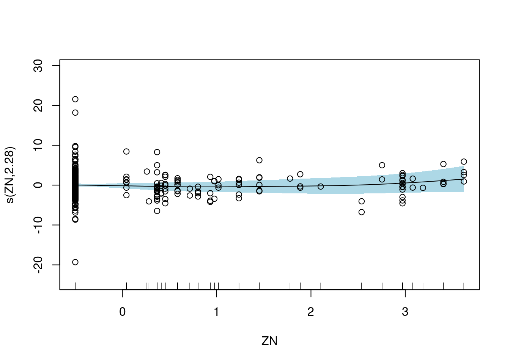
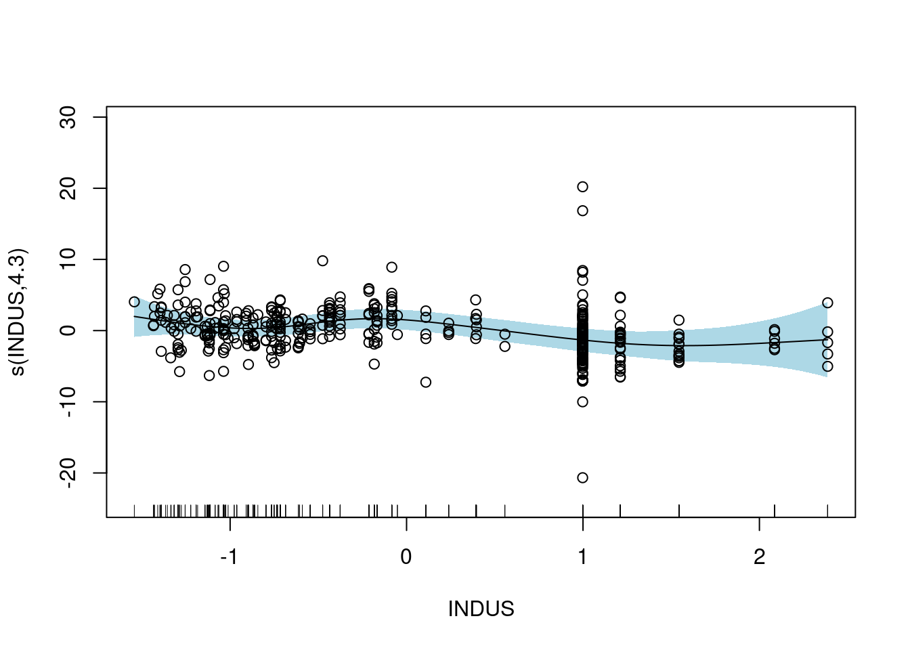
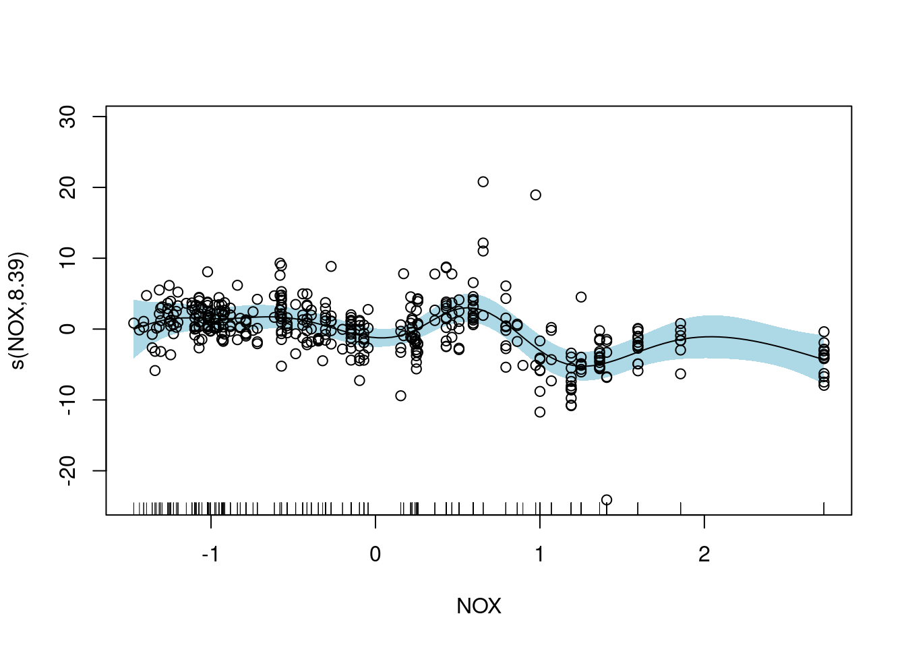
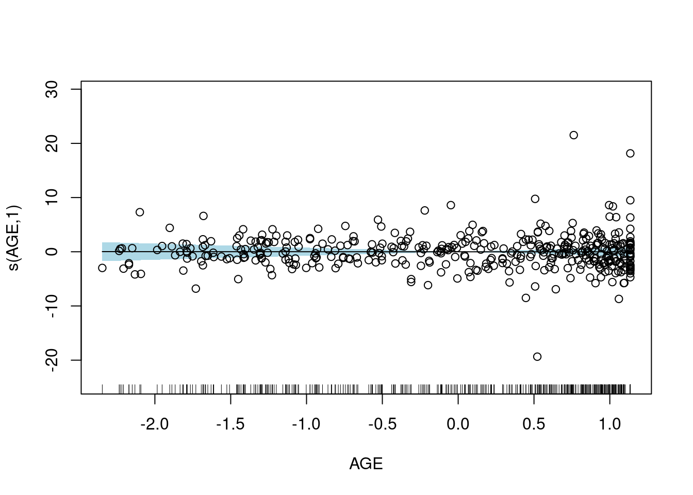

3.4 Final Model
3.4.1 Prediction on Test Dataset
# obtain predictions and test set RMSE
boston_final_model <- gam(MEDV ~ CHAS + RAD + s(ZN, sp = 1, k = 8) + s(PTRATIO, sp = 0.1, k = 12) + s(TAX, sp = 1.2, k = 13) + s(INDUS,sp = 0.1, k = 12) + s(NOX, sp = 0.01, k = 12) + s(B, sp = 8, k = 9) + s(AGE, k = 9) + s(DIS,sp = 0.01, k = 9) + s(RM,sp = 0.8, k = 9) + s(LSTAT, k = 9) + s(CRIM, k = 9), data = boston_baked_train)
boston_final_model_preds<- predict(object = boston_final_model, newdata = boston_baked_test, type = "response") # obtain predictions
sqrt(mean((boston_final_model_preds - boston_baked_test$MEDV)^2)) # calculate test set RMSE## [1] 2.628545The test set RMSE is even smaller, which is a good sign.
Comparing with the first model using GAM model for ames dataset, using it for boston dataset seems to be a lot better.
The reason to that is the fact that the boston dataset is a lot more complex then the ames dataset.
plot(boston_final_model, residuals=TRUE,shade = TRUE, shade.col = "lightblue", pch = 1)
Let’s look at the residual plot for the boston final model.
As we can see from above, only two of the graphs seem to have a slope close to 0, and lots of others with non-parametric relationships.
This is a sign that the model is way more complex, compared to the ames dataset, where only 3 explanatory variables seemed to have non-parametric relationship with the response.
set.seed(111)
gam.check(boston_final_model)##
## Method: GCV Optimizer: magic
## Smoothing parameter selection converged after 14 iterations.
## The RMS GCV score gradient at convergence was 8.826314e-07 .
## The Hessian was positive definite.
## Model rank = 103 / 103
##
## Basis dimension (k) checking results. Low p-value (k-index<1) may
## indicate that k is too low, especially if edf is close to k'.
##
## k' edf k-index p-value
## s(ZN) 7.00 2.28 0.71 <2e-16 ***
## s(PTRATIO) 11.00 5.12 0.72 <2e-16 ***
## s(TAX) 12.00 3.57 0.72 <2e-16 ***
## s(INDUS) 11.00 4.30 0.68 <2e-16 ***
## s(NOX) 11.00 8.39 0.88 <2e-16 ***
## s(B) 8.00 1.42 0.99 0.45
## s(AGE) 8.00 1.00 1.05 0.80
## s(DIS) 8.00 6.42 0.84 <2e-16 ***
## s(RM) 8.00 3.16 0.93 0.04 *
## s(LSTAT) 8.00 6.93 1.03 0.76
## s(CRIM) 8.00 4.42 1.03 0.77
## ---
## Signif. codes: 0 '***' 0.001 '**' 0.01 '*' 0.05 '.' 0.1 ' ' 1However, after several attempts, we were not able to increase the p-value of the basis dimension values and k-index.